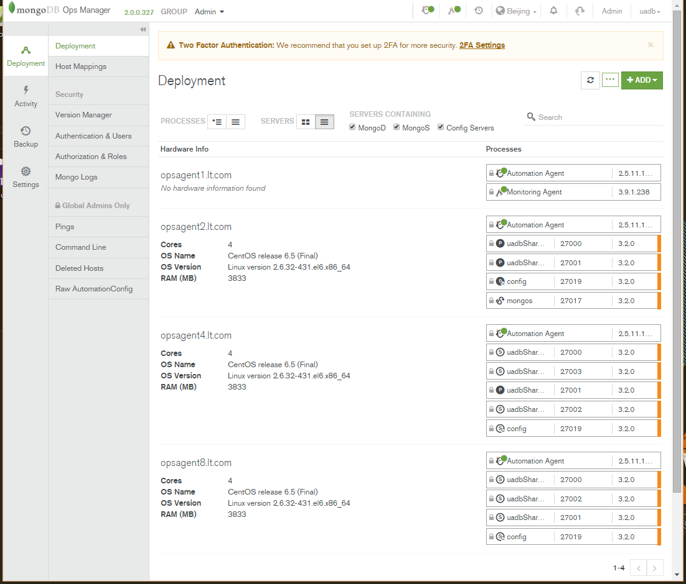
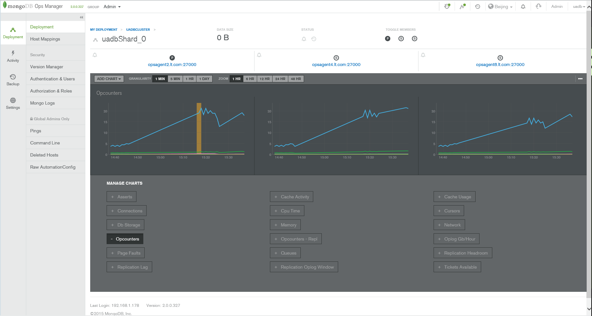
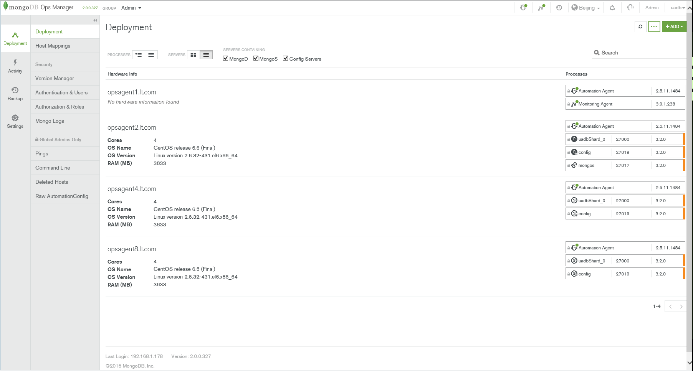

基于Ops Manager的MongoDB 3.2集群离线部署笔记
MongoDB3带来的改变
MongoDB 3.0新版重点主要在效能的提升以及可扩展性，这些改变来自于储存层（Storage Layer）的强化，
MongoDB 2.8版本开始引入支持Latch-free、Non-blocking算法的WiredTiger储存引擎，因此可以开始使用新硬件才有的功能，比如大量的高速缓存（On-chip Cache）和多执行架构。
MongoDB 3.0 还提供了企业Ops Manager管理工具，用来管理大规模的 MongoDB 架构。
个人测试
- 数据恢复（mongorestore）支持并行导入了，性能有所提升；
- 数据存储变成了*.wt后缀的，待确认具体更新；
MongoDB的管理服务（MMS）是用于监控和备份MongoDB的基础设施服务。其中监控的服务是免费的，备份的服务是需要收费的。
Ops Manager
The Best Way to Run MongoDB: Ops Manager
Ops Manager官网
Ops Manager能做什么？
Deployment. Any topology, at any scale
Management. Deploy new clusters. Manage, monitor, and back up existing ones
Upgrades. In minutes, with no downtime
Scaling. Add capacity, without taking the application offline
Point-in-time, Scheduled Backups. Restore to any point in time, because disasters aren’t predictable
Performance Alerts. Monitor 100+ system metrics and get custom alerts before the system degrades
Add Query Optimization. Identify slow-running queries, get index suggestions, automate index builds
安装步骤
服务器准备
1 | #mms应用服务器 |
域名解析配置
HostName配置/FQDN配置
FQDN是Fully Qualified Domain Name的缩写, 含义是完整的域名. 例如, 一台机器主机名(hostname)是www, 域后缀(domain)是example.com, 那么该主机的FQDN应该是www.example.com.
注意：hosts配置不当，后面server和agent间通讯会存在问题，参考host配置如下：
- server/agent配置(master)
1 | # vim /etc/hosts |
network配置
1 | # vim /etc/sysconfig/network |
安装Ops Manager Application Database
可选：Backup Database
设置最大文件打开数1
2#vim /etc/rc.local
ulimit -n 65536
## 安装Ops Manager集群监控
关于Ops Manager
介绍文档
MongoDB Ops Manager is a service for managing, monitoring and backing up a MongoDB infrastructure. Ops Manager provides the services described here.

备注：目前Ops Manager只能完成从无到有的集群部署，sharding集群的shard key等配置需在xshell中手动配置
centos6安装Ops Manager
- 配置ops manager application data数据服务器（192.168.1.51），安装mongodb并启动服务
从其他机器复制mongodb：scp -r root@192.168.1.52:/usr/local/mongodb /usr/local - 安装ops manager server
- 复制到
mongodb-mms-2.0.0.327-1.x86_64.rpm到/mnt - 执行
sudo rpm -ivh /mnt/mongodb-mms-2.0.0.327-1.x86_64.rpm，mms将默认安装到/opt/mongodb/mms/ - 配置/opt/mongodb/mms/conf/conf-mms.properties,设置mongo.mongoUri等参数
- 启动服务
sudo service mongodb-mms start - 设置mongodb-mms为开机自启动：chkconfig mongodb-mms on
- 登录http://
:8080/注册用户
- 复制到
- agent节点分别配置安装automation agent
1 | #以下具体参数参考http://192.168.1.80:8080/settings/agents/中的Automation选项卡的操作步骤 |
其他shard节点可从monitor节点复制automation-agent配置文件：scp root@192.168.1.51:/etc/mongodb-mms/automation-agent.config /etc/mongodb-mms/automation-agent.config
重启automation-agent服务：sudo service mongodb-mms-automation-agent restart
- 在web控制台Deployment中选1台性能较好的服务器配置monitoring agent（如在ops manager application data数据服务器）
- zai Deployment模块Add New Cluster,配置mongos,config server和shards
- 集群测试
服务器主机名regex过滤:(opsagent2|opsagent4|opsagent8)
集群服务器配置:mongos:1/mongod:3/config server:1
端口配置，shards(27000-28000),mongos(27017)config server(27019)
分片数配置
配置完成确认执行后，ops会按顺序自动安装部署shard>config server>mongos，再也不用kb手动去安装了！
mongodb安装的默认位置：/var/lib/mongodb-mms-automation
windows server安装Ops Manager
- 安装mongodb
- 安装Install Ops Manager
- 配置
C:\MMSData\Server\Config\conf-mms.properties（默认路径）中的mongo.mongoUri等连接配置属性 - 在windows服务列表启动服务
MongoDB Ops Manager HTTP Service - 登录http://
:8080/注册用户，admin/1qaz@WSX
问题记录
- No MongoDB versions have been made available for use in your deployment. Visit the Version Manager to enable MongoDB versions.
重新配置，将version manager参数设置为internet而非local - There are a mix of Agents that are installed manually and managed by your Automation Agents. This configuration is not supported.
You will not be able to add new hosts to monitoring or create new automated hosts while in this state. The Agents that should be removed are indicated on the table above.
After stopping an Agent it can take up to 5 minutes to take effect. - 添加集群报错： Unable to create member 2 of myShard_0. Unable to find enough servers. Requested port range was 27000 to 27000. Excluding port ranges 27019 to 27019, 27017 to 27017. Please ensure all agents are running.
shard server port设置在27000-28000范围内，不能设置为27000 - mongos服务无法启动
错误日志：not master or secondary; cannot currently read from this replSet member ns,config.settings query,config.shards query
解决方案：pkill mongod 强制关闭mongo进程，删除/data目录内的shard数据(不能删automation的数据)，重新添加集群 - shard集群分片测试，目前数据量小，数据存储表现为replica set，待测试分片效果！
MongoDB离线部署配置
Configure Local Mode if Servers Have No Internet Access
设置为Local
在Ops Manager控制台，单击右上角Admin，General>Ops Manager Config> Miscellaneous>设置Version Manifest Source 为Local
设置 Versions Directory存储MongoDB binaries，默认/opt/mongodb/mms/mongodb-releases
下载MongoDB离线Binaries
cd /opt/mongodb/mms/mongodb-releases
curl -OL http://fastdl.mongodb.org/linux/mongodb-linux-x86_64-rhel62-3.2.0.tgz
设置Versions Directory目录权限
- 查看目录权限：
ls -l /opt/mongodb/mms/mongodb-releases - 设置mongodb-mms用户对Versions Directory中文件有读写权限：
sudo chown -R mongodb-mms:mongodb-mms /opt/mongodb/mms/mongodb-releases
编辑conf-mms.properties
在conf-mms.propertie最后新增两行1
2
3#vim /opt/mongodb/mms/conf/conf-mms.properties
automation.versions.source=local
automation.versions.directory=/opt/mongodb/mms/mongodb-releases/
重启服务
sudo service mongodb-mms restart
部署截图



Version Manager配置MongoDB版本
在Ops Manager控制台，Deployment>Version Manager>选择离线的mongodb版本>Review & Deploy>Confirm & Deploy.
MongoDB 数据备份与恢复
backup-small-sharded-cluster-with-mongodump
在mongodb primary节点执行mongorestore1
2
3cd /var/lib/mongodb-mms-automation/mongodb-linux-x86_64-3.2.0/bin
mongorestore -drop -d uadb /mnt/dump/dump/uadb_dump/uadb
mongorestore -drop -d uadb_attachment /mnt/dump/dump/uadb_attachment_dump/uadb_attachment
Route Server配置chunk size
参考文档：modify-chunk-size-in-sharded-cluster
注意事项
- Automatic splitting only occurs on insert or update.
- If you lower the chunk size, it may take time for all chunks to split to the new size.
- Splits cannot be undone.
- If you increase the chunk size, existing chunks grow only through insertion or updates until they reach the new size.
- The allowed range of the chunk size is between 1 and 1024 megabytes, inclusive.
修改步骤
1 | #连接Route Server(mongos shell) /var/lib/mongodb-mms-automation/mongodb-linux-x86_64-3.2.0/bin/mongo opsagent2.lt.com:27017 #切换到config数据库 use config #修改chunk size db.settings.save( { _id:"chunksize", value: <sizeInMB> } ) 如 db.settings.save( { _id:"chunksize", value: 64 } ) |
数据库启用分片：enableSharding
参考文档：deploy-shard-cluster1
#连接以mingo连接route server（mongo shell）
mongo --host <hostname of machine running mongos> --port <port mongos listens on>
如/var/lib/mongodb-mms-automation/mongodb-linux-x86_64-3.2.0/bin/mongo --host opsagent2.lt.com --port 27017
#启用分片
sh.enableSharding("<database>") 或者 db.runCommand( { enableSharding: <database> } )
如
sh.enableSharding("uadb")
sh.enableSharding("uadb_attachment")
或
use admin
db.runCommand( { enableSharding: "uadb"} );
db.runCommand( { enableSharding: "uadb_attachment"} );
# collection分片
sh.shardCollection("<database>.<collection>", shard-key-pattern)
如 sh.shardCollection("uadb.AddressNode", { "_id": 1, "ruleabbr": 1 } )
#查看是否成功启用分片
use uadb;
db.AddressNode.stats();
shard集群测试
Sharding 分片分片测试1
2
3
4
5
6
7
8
9
10
11
12#mongo连接admin库
/var/lib/mongodb-mms-automation/mongodb-linux-x86_64-3.2.0/bin/mongo admin --host opsagent2.lt.com --port 27017
#设置分片存储数据库
sh.enableSharding("test")
sh.shardCollection('test.users', { "_id": 1} )
#插入测试数据
use test
for(var i=1;i<50000;i++) db.users.insert({age:i,name:'geosmart',address:'anhui_chuzhou',country:'china'})
#查询分片状态
db.users.stats();